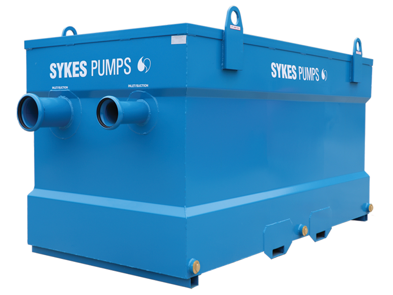

Groundwater Management
Groundwater management controls apply in this area.
Required Controls
- Follow the site environmental controls.
- Keep drainage routes clear.
- Follow all monitoring arrangements.
- Report unusual water levels or contamination immediately.
Groundwater Information
Water pumped from excavations will be put through a Skye pump and discharged to the local drainage system. The Skye pump is a high capacity pump that can handle large volumes of water and is designed to remove sediment and debris from the water before it is discharged.


Image 1 of 2